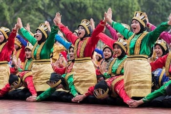
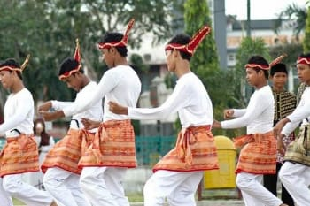

Budaya Aceh sangat dipengaruhi oleh ajaran Islam, yang tercermin dalam seni, sastra, dan arsitektur. Karya sastra Aceh, seperti hikayat dan syair, sering kali menceritakan kisah-kisah heroik atau ajaran agama. Masjid Raya Baiturrahman, misalnya, adalah simbol kebanggaan Aceh dengan arsitektur yang megah dan dipengaruhi gaya Timur Tengah. Selain sastra, kesenian lain seperti tari Seudati dan tari Saman mencerminkan nilai-nilai solidaritas dan kekuatan dalam komunitas. Tari-tari ini sering kali dilakukan untuk merayakan peristiwa penting atau sebagai bentuk ungkapan syukur.
Kehidupan Budaya
Galeri Budaya

Masjid Baiturraham
Sebuah masjid bersejarah yang berada di Kota Banda Aceh, Provinsi Aceh, Indonesia. Masjid ini dibangun pada tahun 1879 dan merupakan simbol agama, budaya, semangat, kekuatan, perjuangan dan nasionalisme rakyat Aceh. Kemudian masjid ini adalah landmark Kota Banda Aceh sejak era Kesultanan Aceh dan selamat dari amukan bencana gempa dan tsunami 26 Desember 2004
Kitab Bustanussallatin
Kitab Bustanussalatin yang dibuat pada masa Kerajaan Aceh ditulis oleh Nurrudin Ar-Raniri ketika kesultanan berada di bawah kepemimpinan Sultan Iskandar Muda. Pada masa ini, Kerajaan Aceh memang mencapai puncak kejayaannya. Kitab Bustanussalatin lahir ketika bahasa Melayu baru masuk ke kawasan Kerajaan Aceh dan digunakan dalam berbagai bidang, termasuk sastra. Adapun tahun lahirnya Kitab Bustanussalatin adalah pada 1637 Masehi atau 1047 Hijriah.
Inti dari isi kitab ini adalah Kehidupan Sultan-sultan Kerajaan Aceh

Tari Saman
tari rakyat dari masyarakat Suku Gayo di Aceh, Indonesia. Tarian ini merupakan salah satu media untuk menyampaikan pesan atau dakwah. Tarian ini mencerminkan pendidikan, keagamaan, sopan santun, kepahlawanan, kekompakan, dan kebersamaan. Sebelum Saman dimulai yaitu sebagai mukaddimah atau pembukaan, tampil seorang tua cerdik pandai atau pemuka adat untuk mewakili masyarakat setempat (keketar) atau nasihat-nasihat yang berguna kepada para pemain dan penonton.

Tari Seudati
salah satu tarian tradisional yang berasal dari daerah Aceh. Tarian ini biasanya ditarikan oleh sekelompok penari pria dengan gerakannya yang khas dan enerjik serta diiringi oleh syair dan suara hentakan para penari. Tari Seudati ini merupakan salah satu tarian tradisional yang cukup terkenal di daerah Aceh, dan sering ditampilkan di berbagai acara, baik acara adat, acara pertunjukan, dan acara budaya.